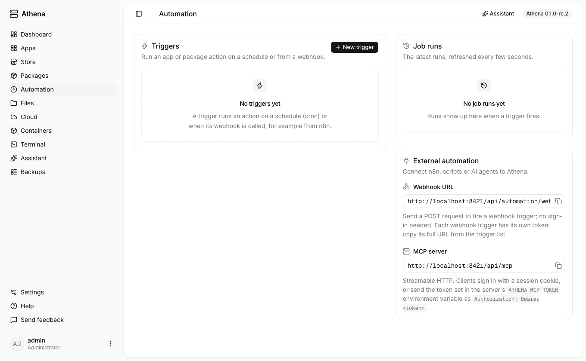

Automation

Triggers
A trigger runs an action when something happens. Click New trigger, then choose:
- When: a schedule (a cron expression such as
0 3 * * *for every day at 03:00), or a webhook. - What: an app action (start, stop, restart, update) or a package action (install, uninstall, upgrade, refresh).
Triggers can be switched on and off. Job runs shows what ran, when, and whether it worked.
Webhooks
A webhook trigger gets its own URL with a secret token. Send a POST request to it from n8n, a script or anything else:
curl -X POST http://your-server:8420/api/automation/webhook/<token>No sign-in is needed, so the token is the credential: keep the URL private. Copy it from the trigger in the list.
MCP server
Athena is also an MCP server at /api/mcp (streamable HTTP), so AI agents and tools can list apps, check host stats, run app actions and manage triggers. Clients sign in with a session cookie, or with a token: set ATHENA_MCP_TOKEN in the server's environment and send Authorization: Bearer <token>. A token acts as the first admin account, and what it changes is audited.